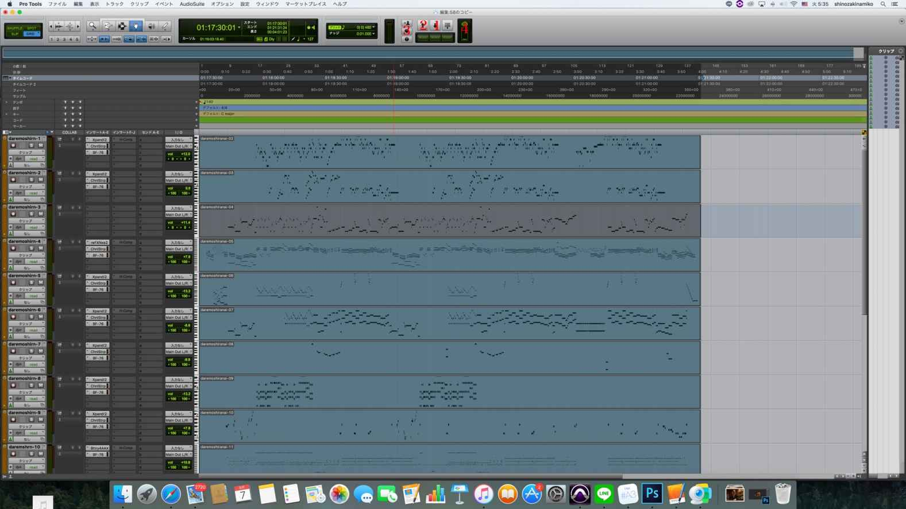
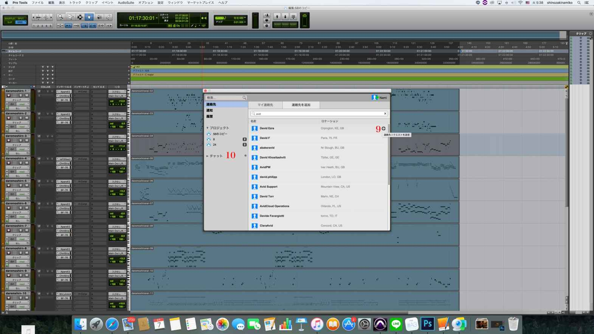
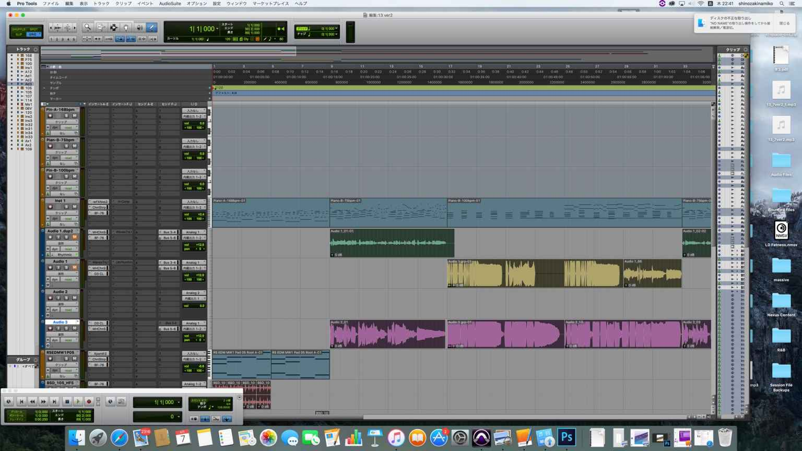
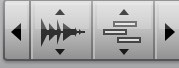
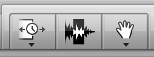
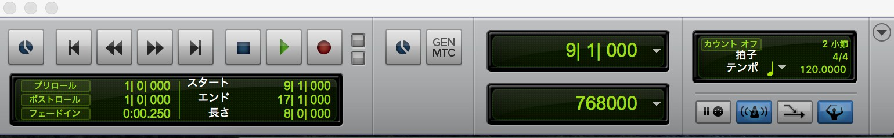
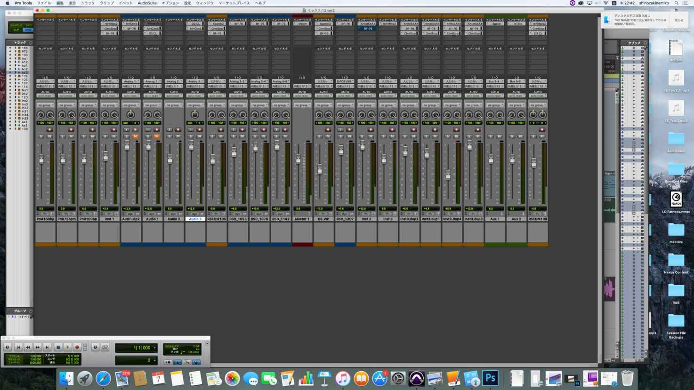
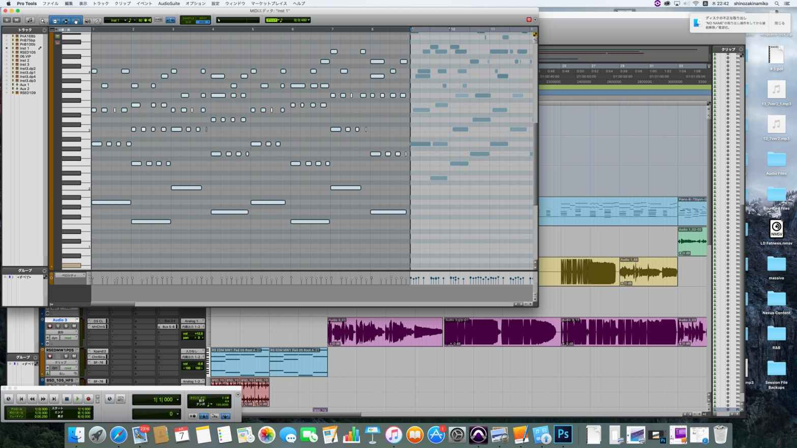
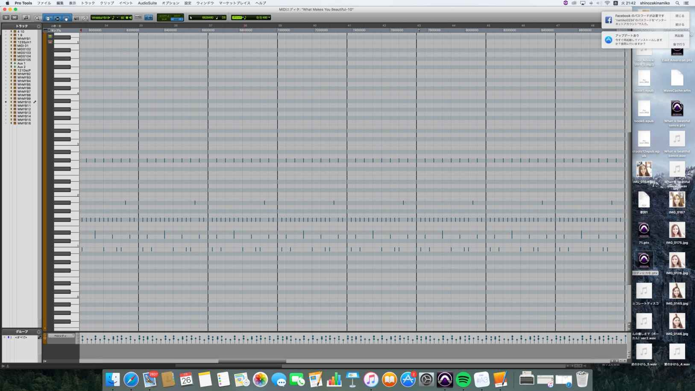

| Protools 12 collaboration etc. commentary book（English Ver） (SN.inc) | |
| 篠崎奈美子 | |
| (2017) | |
セクション 1

コラボレーション機能使い方
Collaboration function How to use
Protools12.5 collaboration features have been added to. By using this function you can sessions music you and others made. First, log in to the Avid Master Account. It is to sign in from the file menu. Then you can invite others and start sharing artist chat from the window menu. First download the track of others (1) their track Let's first upload Once you have completed. (2) notification chat and trucks When you receive from the other party comes in (3). (4) is a measure of cloud storage usage of the current project. In plus tax per month 1,200 yen, you can earn the storage of 5 project / 20GB (40 times the cloud storage capacity of the free plan). When dealing with large-scale sessions and projects, it can be enlarged by excluding tax per month 3,100 yen to storage and up to 10 projects of 60GB. It is to upload the arrow, such as wearing BPM and their songs (5). It is to download a track of upload and others their own track (6). It is to share (7). And (8) displays the name of the people of the track made. It is easy to upload your own track, just download and share people's track so it's easy. There is a chat function to work in real time. In advance to a meeting with Skype and Facetime, it is only a simple update of sharing the track with each other. Let's share songs made by myself and others and make songs. Orange No. 8 turns amber in the other party work, it will be blue while he is working. If there is no name, there will be no one. When No. 6 is of dark green it will be displayed when the opponent has started the upload. Upon completion of your track, upload it and have the other party download it. Display of Auto will be be automatically uploaded. If you do not like automatic, let's remove it. Log in to the window menu of artists chat, press contacts, because the candidate if you enter the name of the person you want to chat comes out as number 9, let's enter the message and press the plus button of the person you want to chat. When you press the plus button number 10 place called chat, because the name of the person you want to invite is displayed, let's invitation to enter the name of the person. Function of 12.5 just download this upload, share, and it looks complicated, but because it is a story of the only working each other, let's do because it is all right not defensive because it is a simple procedure. The is have the same thought this upload and download is Apple's music distribution. The person who was recognized among the top creators Some people to CD asked to hear the label here in the database. Pessimism Apple's delivery and fast (I am a 30-minute Toka one hour, delivery was was) or give me a work in by ear, Some who but is the values of the people think it is good, that there is no reality There are also people who become like. But it is safe to is illegally Apple higher security than those that can be downloaded such as Youtube is safe hundreds of times, also of Avid's collaboration capabilities because security is also high. Apple's music distribution, and exchange among the first sound source, because there is also a means get to hear a lot of listeners, produced in Protools12, do the upload and download in Protools each other, also be the Apple of music distribution Once the sound source is completed Let's take a look. Other delivery at Am azon is also valid but do not know be a bit time-consuming is given. I or incorporating the new OS this to the database so went pretty well at Apple, has been steadily making a song. Are not you making too much? I think, but I will not lose even if there is, so the more it is, the better. Unless it is a trash. Now to many people and collaboration in collaboration Protools12, let's fun music or delivered.


セクション 2

サンプリングについて
About sampling
While simple on using Protools also advanced players that have to be quite elaborate, it is the world of sampling. But only use side-by-side so boring, it is recommended that you want to edit from the MIDI screen. However, it seems that the number has decreased a few recently. Is it just sampling? Although there might be some people, if you do everything in the drums, you get a sense of realism, and I can not even translate into all sampling, and before sampling to Krypton's Santo and sound to the engineer It says that it is cheap because it saves my labor. I used to use it a lot before, but it seems that everything I almost wanted was bought up. In the end people who can not play instruments will not continue. It stops somewhere. A person who does not know the dre mi of the instrument can not be able to request the site quickly for the operation, and those who continue for many years certainly have the basis of the instrument. Also, I would like to introduce something fashionable, new and fresh. So is the basic operation of Protools, but read the San pudding packaging is
① Open from file creation
Read a sampling in ② file ➡ import ➡ audio
③ Select the audio waveform and click on it to see such a screen.
When it is selected press the completion of the right bottom right
④ to adjust the size of the waveform After loading combined in (bar 9 bar-delimiter) TLC
TLC screen
Select the TLC in the right click.
⑤ Fit the size to the measure
Right-click Press and hold to adjust size
Mixing open the ⑥ window ➡ mix screen
⑦ Finally, select the loop, determine the number of loops, it is completed with input This the number of times to loop in the option + R. After that I like the effects such as equalizer and compressor, but anyone can easily compose using sampling. It's a very easy way, so anyone can do it. Because by dividing the sampling by the Beat Detective you or make a beat of the drum in combination or in single note, I would like to be described.
Choose ① event ➡ Beat detective
② Select the rightmost measure | generate beat marker and press analyze "Then the line where the sampled audio is split appears in the waveform, just click on the bottom generation Click here the sampling is split By doing this, you can try combining audio as you like, because depending on the combination you can create a beat that is close to you, and you can also create sound effects etc, so please try it out.
セクション 3

OSの選び方
How to choose the OS
Protools12 you must have a personal computer on using. Good performance of Protools To buy it, you'd better purchase more than the system requirements. windows10 still support It was also supported. Since it has for the PC body is only the manufacturer / model that has been specified in the "verified Windows computer" is support for the following page, please note. http://avid.force.com/pkb/articles/en/Compatibility/Pro-Tools-12-System-Requirements Protools12 is (with upgrade plan) Subscription's a year (monthly) 2917 yen That's month contract 3500 yen / month at a low cost, permanent license is ¥ 70200. The latest OS Mbox pro2 is not supported. Those cheap interface that has been around personally recently is the rumor that there is no problem, but more than 80,000 of even Higher sound processing etc will work better if you purchase. Also let's choose the one that can be recorded at 192khz. The necessary plug-ins in my productions drum plug-in, Nexus, Xpand, vocal Effects click Only sampling is necessary minimum. EQ of vocal Should you be concerned about. It becomes necessary even if you make the interface superior. The system requirements are as follows. The following model that has a problem in part the performance of the MacBook Pro does not take compatibility Since there is a modem, please pay attention to the following.
Early 2015 MacBook Pro 12, 1 2 - Core i 7 'Broadwell' 3.1 GHz Early 2015 MacBook Pro 12, 1 2 - Core i 7 'Broadwell' 2.7 GHz
(Early 2015 MacBookPro 2-Core i7 of, there is a problem with the performance. ) Some of the compatible, Mac:
Mac OS X 10.8.5, 10.9.0 - 10.9.5 , 10.10.0 - 10.10.5 or, 10.11 - 10.11.3 of Intel® Mac equipped with OS
Intel® Core i5 processor
4GB RAM (requires at least 8GB for video playback)
Internet connection required for installation It must have free disk space of 15GB to install
2
It requires a USB port to the iLok 2 Authorization
CoreAudio to the use of the corresponding audio interface, USB port,
FireWire port, such as the need Thunderbolt port
Only Pro Tools in 64-bit AAX plug-ins are supported
Windows:
Windows 7 64-bit (Home Premium / Professional / Ultimate Edition) or
Intel® PC equipped with Windows 8 / 8.1 (Standard / Pro Edition)
Intel ® Core i5 ® processor
4GB RAM (requires at least 8GB for video playback)
Internet connection required for installation
It must have free disk space of 15GB to install
It requires a USB port to the iLok 2 Authorization
ASIO The use of the corresponding audio interface, requires a USB or FireWire port
Only Pro Tools in 64-bit AAX plug-ins are supported
16GB should be prepared to use the protools12 comfortable. Because music tracks It gets settled as the number increases. If 16GB will no problem.
セクション 4

ilockなど
ilock etc.
Prior to you There is a need to create a iLok ID.
How to create a new iLok account (updated 2013/06/10) over the visit, please create. http://akmedia.digidesign.com/support/docs/creating_new_ilok_ID_en_201306_79469.pdf
セクション 5

基本操作
basic operation
Now that preparation is complete, it is the beginning of composition. Let composers do well for novice composers using materials. How to use the edit window. Edit mode selector has shuffle, spot, slip, grid. I only use slips and grids.
Slip you can specify the free position at the time of the movement. The grid is set to bar, beer, minute, second it can move.
.
___
Use of Sumubotan is, can be enlarged by pressing the right of the zoom, you can shrink and press the left. This can Command @ But reduction.
___
The selector tool, selector tool can partially select region etc. of each track.
 
セレクタツール、セレクタツールは各トラックのリージョンなどを部分的に選択できま
す。

How to use grit values. This is a half note, quarter notes, it is driving from eighth notes to 64 notes It is. Up is possible to note 64 when implanted finely.
How to use the transport. This is mainly recorded with recording, playback, fast forward, rewind functions It is for. Press the red button on the transport and press the round button on the track to play You can record.
Pencil tool is what you need when writing the MIDI data and automation. The input of driving in the pencil tool, and enter the MIDI data.
___
I can write the volume with the mouse with free hand. Volume is put on the volume where the clip of the track becomes the volume. A line can be used to write automation. If you want to do fade in fade out etc I will use it in conjunction. Triangles are used for volume to move automation up and down. Squares enter automation with square lines. Random can be written randomly and freely. Barrabora is a function that you can gradually write automation radially. S curve can be entered in the street S line of its name. How to mix. Mix is to select the mix from the window, move the meter up and down. With.
by the pan knob to the left and right only from the only or the right from the left can be to each part. It is also possible to mix only one track by pressing the solo button. Volume recorded was the MIDI data in the velocity can also be adjusted. Up and down from the velocity open the MIDI window to change.
tempo is set to 120 at the beginning of the set. If you want to change this, Bar, change the click after the BPM a positive tempo in the field of the hour, minute and second. Quantize the entered typing. This is useful when the quantize out was recorded MIDI. When you select quantize from event operation, it is decided how many notes. You might want to generally keep the 8 minutes to 16.
___
To bounce
Bounce always selects interleave when bouncing from file. MP3, to select from such as Wav, After specifying the file save location, check offline and write it out.
Change the truck's rayon and color.
Click on brown or blue color for each track's default color
Then it is changeable. Let's choose your favorite color from the color palette.
Change the name of the track. You can change the part that is the Inst and Audio by double-clicking.
___
Record a vocal. Vocals are created from audio tracks, mono tracks from new tracks, red the button Press. You can record by pressing the transport's red button to play it. Let's connect a microphone to the audio interface.



セクション 6

エフェクトの使い方
How to use effects
In the case of BF76 that in the compressor to balance (protools included ones) Input 24, I'll give up much output 12, Attack 4. Attack is more important in sounding beeps, so beware if you miss it. Other compressors are made similarly and can be applied.
More how to mixing with the waves, Inc. plug-ins I will explain. The basic mixing compressor, EQ, reverb. But here I will dig down and I'd like to explain with a little more plugins I will. How to use EQ Plug Tec MEQ5. Usage is simple with only a little increase the Gain to choose a musical instrument but a warm ac- coustic than Load to choose a plug-in. It's drum include Wood snare. How to use REDD17. This is to select a variety of musical instruments from the Load, you can apply EQ. EQ is multiplied by piano, guitar, vocals, bass, drum. The setting is completed by just selecting it. How to use Line EQ Broadband. Up to 6 band is possible. Although you set the type of light blue to Low shelf Hi shelf Bell Hi pass Low any of the pass I We use the Ku Low shelf. Raise the red circle a little. The setting is completed with the above. GEQ modern usage. Click on the leftmost button. A little raise the 2.7 and 5,2. Generally is 1db from 3db. It is done with the above setting. Vitamin use. This is also just pick your favorite preset from the Load. Volume by increasing the Output little can also be a little adjustment. Using the waves plug-ins Shepes73. This is also only selected from the Load. If the piano if Wide Pi- ano Vocal Vocal1, Vocal2, snare drum if, because it is kick Toka various available instruments Please select the preset that matched. It is about compressor. How to use API2500. There is no Gain to this. We passed through to select the favorite musical instrument even than this Load It is. Let's not change the such as Attack and Release to your liking. How to use Super Changer AAX. This is up slightly to the right, the sound pressure by making it slightly to the right of the Input and Output. The sound pressure increases as you move the above to the right. waves's plug-ins generally only choose from Load there is little need to fiddle with knobs and words It is that. How to use Kramer Pie. This is also to choose from Load, Out- sound pressure will increase only raise a little put. Transient Master How to use. This will increase the sound pressure by increasing the Gain and Attack. Turning the above to the right turns the sound pressure. CLA3A how to use. Select a preset from the Load, a little increase the Gain. How to use GW Mixcentric. increase the output Raise the Input. It is a trick to put it down. How to use Dbx-160. Choose your favorite preset from the Load. Slightly increase the Gain. A little raise the Output. Setting is completed with the above. Roughly waves will not appear to be one of the more explanation since it is the same kind of make more. Protools only can be mastered the basic use. Since it has been able to use even from 12 in which the Interface Products You can use any manufacturer's products. You can do anything by editing the sampling of krypton. To improve the completeness of a song, perseverance is necessary. There are few songs that will work at once. It needs to be redone as many times as you go. When mixing songs, etc., you have to listen many times It is important and it is also important to check the same phrase many times. There is also a vocal in need to prepare lyrics. Lyrics are produced in Notepad or a word, it is useful to print. More than the personal computer of the prepared way in order to produce music in Protools12, compatibility, Protools12 how to use It will be how to use the effect. Everyone please make a nice song.
セクション 7

歌詞の作り方
How to make lyrics
Lyrics will be able to write that they are doing lyrics like the following for many years. It is a list of lyrics that Shinozaki Namiko wrote down. If somebody can not take care of someone already living and loving one You too important It can not be done in minutes. I remembered that Hey, I still remember it. The thing I should love from myself Hey, let's get together The continuation of a dream that should fulfill one's promise If you remember the first encounter left here that you can only do My heart has hurt, but Because you are all recognized I am not scared now. about Please leave it to mind If you always give up on yourself as usual you will be unbelievable You are also scared. I remembered that I can not forgive him
Hey, you will not forget If you want to believe that you are from yourself Hey, let's get together Someday I talked about what I had talked about If you remember the last wound left in here that you only know what you are My chest became painful Because you loved me all I will not forget it now. When Please be sworn in my heart Once I remember the first encounter My heart has hurt, but Because you are all recognized I am not scared now. about Please leave it to mind Remembering the last wound My chest became painful Because you loved me all I will not forget it now. When Please be sworn in my heart
Even in such a world it will not end One thing that does not change is in me I was told to tell you I have not been there until this point I only want you to understand, so I wrote it here If necessary If you do not need it you can throw it away What you were trying to convey to you is the endless feelings to you So surely I will know someday You think that? The fact that I have been working hard so far do not want to lose you One day's feelings of that day Keep running all the way Even if the end comes I will not forget that I have a feeling I do not want to forget I'm asking you If you do not ask for it, you can forget it You are asleep as you are, but I will stay that day You are shining Try asking if you get up while you are still You are the only one in my heart That's not changed But as it probably will not reach this way you When trying to remind me I will run to you I heard a voice heard somewhere and ran running all the time It was What I was about to tell you was the endless feelings to you So surely I will know someday You think that? The fact that I have been working hard so far do not want to lose you One day's feelings of that day Keep running all the way
You are the only one in my heart That's not changed But as it probably will not reach this way you When trying to remind me I will run to you I heard a voice heard somewhere and ran running all the time It was Somehow it is painful as today the power has gone out very much I do not think it's gone wrong I can not move out of my way anyhow Because such a rough surreal I want you to encourage someone like that I feel like that I do not want to pass as anymore I want to put myself out all the momentum Only I do not know if I can not be shaken out and I am clear I'm not once you stop? Such easily myself to become easier If you wait too long and quit again Somehow, I lamented as if everything stopped very yesterday You'd better stop it. I am tormented by my own efforts I do not feel like this so I want someone to cheer me up If you do not end up with that kind of throwing that kind of throwing I pulled out and returned myself Want But you can not throw me I can not say unless you are clear It's not once you cool yourself in? Such misunderstanding become easier If you wait too long and quit again If it does not pass as it is because of that kind of mind I want to put myself out all the momentum Only I do not know if I can not be shaken out and I am clear I'm not once you stop? Such easily myself to become easier If you wait too long and quit again If you do not end it like that kind of throwing I pulled out and returned myself Want But you can not throw me I can not say unless you are clear It's not once you cool yourself in? Such misunderstanding become easier If you wait too long and quit again
Melodies having casual faces even repeated every day The view of the scenery which is surely seen in the eyes is eternity Not even Surely the imagination that comes to mind is not fantasy I'm afraid I am lined up with such words repetition I was a back-to-back facial expression I want to keep running forever I just want to burn to the head only the real thing in front of my eyes I feel next to the real happiness next to me I also knew that everything had a purpose There were casual colored melodies replaced every day It is probably meditation beyond the back of my mind beyond my eyes Squid Surely the end of the controversy on words is not imagination I wonder if my imagination is attracted Son song Redoing I was guessing back to back I want to keep running forever I wish to line up the reality just in front of my eyes I feel distressed the suffering of reasoning while I am far away I also knew that there is no purpose in everything I want to keep running forever This is the real thing before my eyes I want to burn on my head just want to burn reality happiness next to me I know I do not have any purpose in everything I want to keep running forever I only want to keep running I just want to line up with reality in front of my eyes Feeling the distress of reasoning far away While I also learned that everything has no purpose
Because it is likely to be misunderstood as an excellent person and crushed under pressure Everyone is suffering everyone Keep your feet away from yourself I want to calm down I do not think that I do not have any merits There is something that can be done somewhere What? I want to think so
Even when the result does not go as far as it seems Your talisman as safe as you can smile I also think I leaf?
I wonder if I could live happily someday I am smiling softly Even if it is painful now I will not throw away hope so Even if you do your best, someone will admit it Do not lose sight of the meaning of the essence captured by the world Because there are stains and the best one seems to be chased after the pressure There is even a weak pain everyone else where Looking for a dream about someone else What you want to give I do not think anyone has no weakness though There are things that can be done somewhere The Even when I do not feel like anything freely to think anyway A revolutionary townscape like yours to laugh and spend your healing I wonder if I even think you know?
I wonder if I could live happily someday I am smiling softly Even if it is painful now I will not throw away hope so Even if you do your best, someone will admit it Do not lose sight of the meaning of the essence captured by the world I wonder if I could live happily someday I am smiling softly Even if it is painful now I will not throw away hope so Even if you do your best, someone will admit it Do not lose sight of the meaning of the essence captured by the world I wonder if I could live happily someday I am smiling softly Even if it is painful now I will not throw away hope so Even if you do your best, someone will admit it Do not lose sight of the meaning of the essence captured by the world I gathered little by little and replaced it so I could not balance it Wind blows for two people Feeling that it has been decided all the time I just got tired a bit but it's all right But now I thought you needed it When I am just about to walk something Stretch out and look into it The droplets that strike the rock Even though it hurts Let's collect shining droplets Even if the sun goes down I wonder if it will stop in the shadow you are going to come back with memories come and going back I prayed a bit and prayed and replaced, so I decided to go inside a chemical world When the meaning came for two people Feeling aiming forever When you are trying to Daso walk just something we had seen only your profile but I wonder if the heal a little okay not crowded inferiority complex even correct the back waves that strike the Seto crocodile gentle is Let's collect the friendly wave is likened day also around the time trying to Daso to walk something just Do not now or towards the shine come feelings if things damaging to the Yawa there are you fallen try peek stretched out the hand is drop to strike the rocks even painful collect drops shining Let's even if the day time you are going Daso to walk something just do not now or go home with memories that come Tour of if that stop in the shadow there are you even fall is not crowded inferiority complex even correct the back waves that strike the shallows crocodile is gently Let's collect the gentle waves even if also fall day kana towards the shine come feelings if things damaging to the Yawa there are you Do not tired tired of day-to-day repetition It is it if I thought I would be a force impossible to push yourself because not because Kimi's important Once broken can a thing to complete the meaning is you in the characters even if rather be had painted sometime I'm not forget the feeling of jumping over not to meet the expectations okay remain this doing is Mr. Keru
It if there is not exhausted even run out day-to-day again and I thought I would be a close because it is more important than throw away outdated Datte those not old nothing is not nothing broken without that meaning When you are no longer However we can not do anything in the landscape who dwells clause characters even if you are Itako When I told someday the Tobinukeru feel also that get along all right kun may not be met their expectations do not forget the feeling of jumping over to get along okay kun while this remains this is not contrary to the culture do not forget the Tobinukeru feel do not forget even if not contrary to the culture okay remain this get along is Mr. waves are not able to meet you not agree with the disturbance mad views the naturally followed pathway under the towering trees one person kun either without leaving I took in the thoughts It comes Deep keep walking one person a light person is similar to the prayer of ephemeral sleep only think that floated to the breast is playing a Nagorioshiku sound of whether called a forever shrouded in you defunct sea to bring even that question love love It does not fit in a dream to be in the crazy gap the very subsequent exploration under the day Yuku Standing widely one person deeply argument to take in the thoughts of love Both come to meet you continue taking along one person light through is similar to the prayer that incline dance is people only think that deepened in love connect the thinking carefully sound or spend the chaos wrapped in you defunct sea that is pulling even that question to people sleep fleeting similar to the prayer just think that floated to the breast is playing a Nagorioshiku sound forever and can be called for if such a question even if wrapped in you defunct sea to bring similar to the prayer that incline people dance only think that deepened in love thinking carefully connect the sound of either spend the chaos wrapped in you defunct sea that is pulling even that question well become the method of the lyrics is to read a lot of books. Continue to note that the day-to-day came up Protools smoothly melody If we put in the humming also will work as you practice. The trick is to hear the rhythm of the chord progression over and over again is to create a song that has sense of rhythm. Because of Ki There lyrics vocal lyrics also help. Be able to create on their own. Read more books for the Protools12 is to successfully melody using. We look forward to the day to listen to the song that contains the your song.
Namiko Shinozaki
チャプタ 1

Native instruments
Native Instruments
seems a new one comes out, but, Battery 4 is how to use. Native instrument10 new has entered the battery4 is quite usable drum. This contains sound source. Easy to use. Installation Once the toll just driving to choose the tone on the right side. Very new sound because there are a lot of libraries to enter the hand. Of the drum by using a sampling make your own drum set up a battery, and then cut and snare in the left click from New Sound. Turn on, such as sampling of snare and bass drum to a specified location in a subsequent drag-and-drop. Basic, song because rhythm is dependent on the light and dark of the song that it is useless, it's a good bet that the made a good rhythm of the ride. battery4 is how to use. This can put the sound on your own. This is useful when something is unsatisfactory by the drum that contains from the beginning. It will put a single note, such as a bass drum ya snare you have of yourself. You can create your own drum by doing this. ① Cut Cell Click on the drum that you want to remove from, remove ② put the drum to have a yourself with drag-and-drop. Only this. Please try to reference so you can now create your own drum. Massive use. Make a chocolate disco. From a massive way to make a sound with.
1: OSC1 the Square saw to Ⅰ
2: OSC1 turn the veil table of the far right
3: ntensity be in the middle of the
4: amp is in the middle of the
5: the pitch 12 to
6: OSC2 the Smooth Squre to
7: turn left most veil table
8: Intensty to the leftmost a
9: # 038 to the far left
10: pitch 12 to
11: OSC3 the Square saw to 1
12 veil table best to the right
13: intensty a turn to the left
14: amp to the far right of the
セクション 1

ドラム作り方
drum How to make
How to make (the drum DTM ) drum by the drum kit c1 from c7 to the bass drum is different position of the snare hi-hat. First bass drum Is there any snare where in the position it is important to distinguish Where is the. After implantation programming like my case screen shot, Bass Drum , snare, hi-hat, we cymbals, to identify the position of Tom or the like is placed. Usually 0 position of the bass drum is often the software configuration but let's driving distinguished sounded since the arrangement each of the plug-in is different. Complex driving many cases of MIDI does not distinguish properly because typing on the screen of the editor and will mess up music. Simple Bass Drum , let's make snare, hi-hat, cymbals, the discriminated parentheses good drum pattern the position of Tom. 8 beat, 4 one hit, 16 there, such as the beat is my music are you that was pretty fancy is when the program packaging.

セクション 2

ヴォーカルのミキシング方法
vocal of mixing method
is about mixing method of vocal. Vocals at the time of mixing I / O you need to center the distribution of. This is if you are taken with mono have been set from the beginning to sound from nature and the center. So vocal is to take in mono. And why and I say from the center, because it so as not to be confused with the musical instrument. If taken in stereo you need to bother to center. Let's take as much as possible in mono. After the instrument has become in the right-to-left, always vocal note in there because there is a need to ensure that sound from the center, rest is perfect if Totonoere the balance (of the instrument). Sometimes sound effects, vocals may only from the only or from right to left, but the basic is from the center CD after if mixing the balance in mind that take in mono Since it has ringing sound of the compressor and EQ in It is completed by mastering. Vocal is easy When you work you, but get used to have a little bit of study. Is also a trick to keep in mind only the fact that from the center.
チャプタ 2

Strike is how to use. Strike will cool by the sampling in the programming yourself. Usage is simple. The street sampling was also described before 4 Turn off in the long bar. Command + E will expire at. You can also assemble cut much to the complex. After that strike you put in. Shift You can drag in the long press. This time Ballad051 was the sound to say. We cut the bass in the eco-riser. H Comp of Phat Kik issues a punch to kick in. This further driving is the bass drum 8 has been had in the beat. Implantation + sampling is quite usable technique. Avid of genuine plug- Air Multi Chorus is the use of. Very easy use.
① you to select the desired preset from the preset. This time, the lead sound source chorus has over
② Rate 'll give you. This is the more effect will strongly increase to name
③ DEPTH raise a little
④ by your favorite Low Cut to. What to do if there is no sound. Suddenly there? The sound will occur often trouble that no longer sound. That is what to do if.
① Click the apple mark
② Open the sound from the System Preferences
③ Enter the line input.
④ Please be on your interfaces output. This looks like the sound comes out from the PC. Protools sound is what to do if that does not sound from
①to select a playback engine from Setting
② to select your interface S1 Shuffler is how to use. This plug-in is a plug-in that will create a natural space the spread of the sound. The spread of the left and right of the sound With the shaft in rotation is. Also Gain to adjust the volume of sound.
How to use
① Load choose from your favorite preset
② With determine the spread of sound in
③ Rotation determines the axis in. Please make the spread of the triangle roughly. CLA Vocal is the use of. This effect will take effect in the vocal just passed through. This is useful if you want to put out a little unusual effect. Load from the Help less because it was too much choices, Terble and Compress and Reverb was a little lower, and the like. If you want to put out the very effect it may be as it will give an effective effect by but to adjust Waves Sound Shifter use. This is effective in changing the sound, such as a drum. Sound or to down or up. This time, I tried to put on snare. How to use
① Load than Smooth up to select the
② Ratio raising and lowering the
③ Mode to select
will change the sound in the above settings
can be used to accent of the drum, such as rust before.
Waves plug- MV2 is also an effective way to make the sound pressure compressor that. How to use is a little confusing. We look for simple design, but is careful to betting.
How to use
① launch a plug-in
② Low Level to 24 from 28 set between
③ High Level a - 6 to about
waves plug- H comp is punch you out to the drum just passed through. This Comp with analog feel. In particular, the drum Pumping Drum you can use. In addition it can also be used as a mastering order to lose the overdue sense of the piano. And the use of the description will be a very beautiful sound.
① multi from the plug-in Dynamic select the Hcomp to select the
② drum AE to H Comp sting
③ Pumping Drum to select the
④ Output roughly memory a little raise the 2 is about
⑤ method applied to the piano: H Comp launch
⑥ Load from mastring to select the
⑦ Output slightly raise the
can drum and smooth piano with a clean punch in more simple mastering. You can also use the bus and vocals are other
- Protools12
-
業界標準のDAW 作曲ソフト